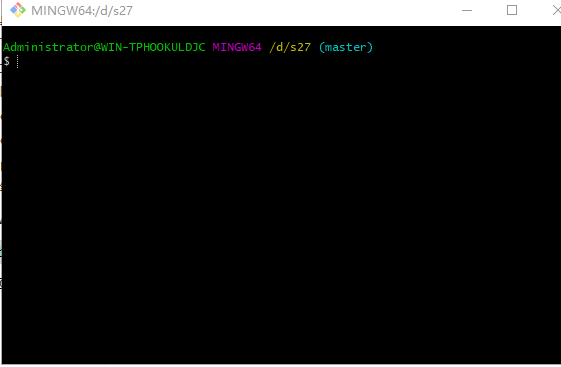
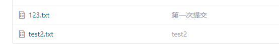
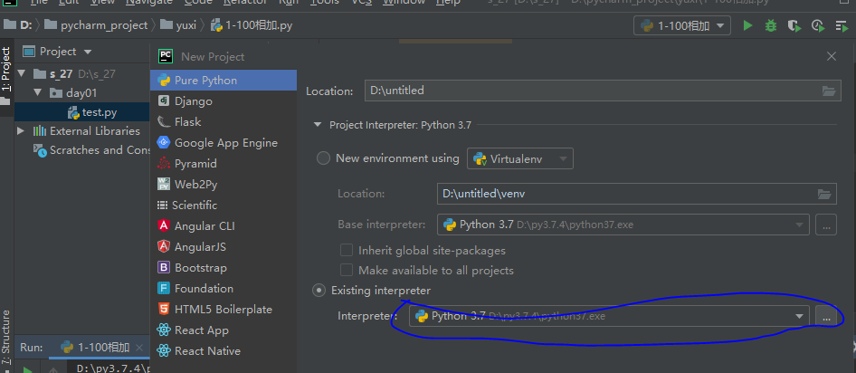
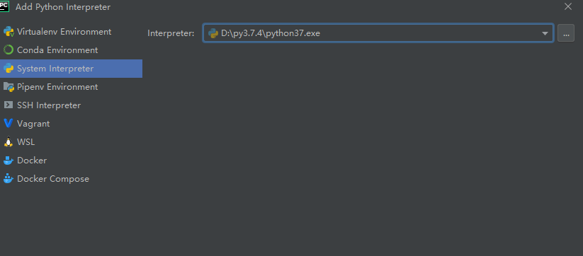

下载Git一路next
在码云上新建仓库
建立码云仓库
右键 git bash hero

依次输入
git config --global user.name "用户名"
git config --global user.email "邮箱"git initgit add .git commit -m "first commit"git remote add origin https://gitee.com/快速设置给出的地址git push -u origin master输入码云的账号密码
git add .
git commit -m "备注"
git push -u origin master不允许上传视频音频
不允许码云上修改文件
要修改先下载再修改
git push -u origin master -f 强制上传 最好不要用

git init 在文件夹下创建一个。git文件
git add . 将文件夹下所有的文件添加到缓存区
git commit -m "备注"
git push -u origin master 将缓存推送到远程仓库 o是一个别名，m是分支下载安装选择位置
激活码请访问http://idea.lanyus.com/
打开pycharm后file—new project—小三角—Existing interpreter选择解释器位置


右键大纲文件夹选择新建文件夹或者工程文件